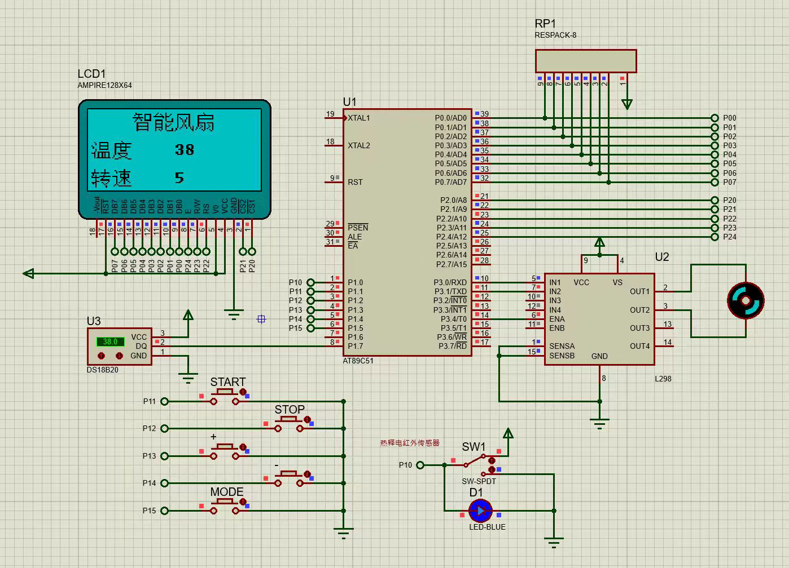
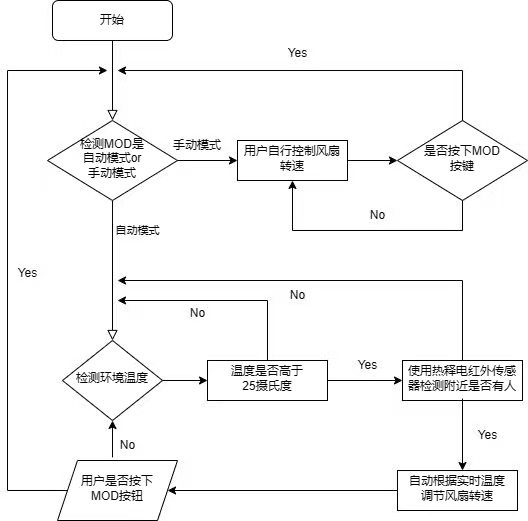

智能风扇系统
基于 AT89C51 单片机的温度闭环控制系统
AT89C51C 语言Keil uVision4
Proteus 仿真DS18B20L298LCD12864
系统仿真运行

Proteus 仿真运行中：LCD12864 实时显示「智能风扇 / 温度 38℃ / 转速 5 档」
系统流程图

温度采集 → 单片机运算 → 电机调速 → 液晶显示 的完整闭环
技术要点
- DS18B20 单总线时序驱动 ——
Qnewire.c 手写位操作，不依赖库
- 五按键交互状态机：START / STOP / ＋ / － / MODE
- L298 使能端 PWM 调速，五档转速手动 / 自动切换
- 显示与采集分离的模块化架构：
main.c / LCD12864.c / DS18B20.c
- Keil 工程与 Proteus 原理图文件完整开源，可直接复现
⭐ 查看源码仓库